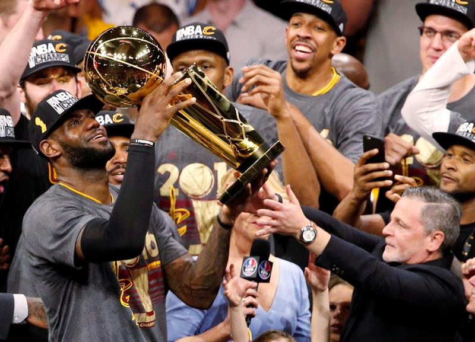

James fue seleccionado por Cleveland Cavaliers en primera posición del Draft de la NBA de 2003. Antes de llegar a la NBA, LeBron firmó un contrato de 90 millones de dólares con Nike y otro con Upper Deck. Eligió el dorsal 23, el mismo que llevaba Michael Jordan, al que considera su ídolo y un modelo a seguir.
Debutó ante Sacramento Kings, con 25 puntos, 6 rebotes, 9 asistencias y 4 robos. James admiraba a Kidd desde que llegó a la liga y le dedicó su primer triple-doble a él.

Finalizada la temporada 2013-14 y tras haber perdido las finales contra Los Spurs, LeBron decide dejar el equipo de Miami Heat y volver a firmar con el equipo con el que pasó sus primeras 7 temporadas, los Cleveland Cavaliers,61 junto a Kevin Love y al ya establecido y líder del equipo hasta el momento, Kyrie Irving.
